| MEAL PLANNER |
| DAYS |
BREAKFAST |
LUNCH |
DINNER |
| MONDAY |
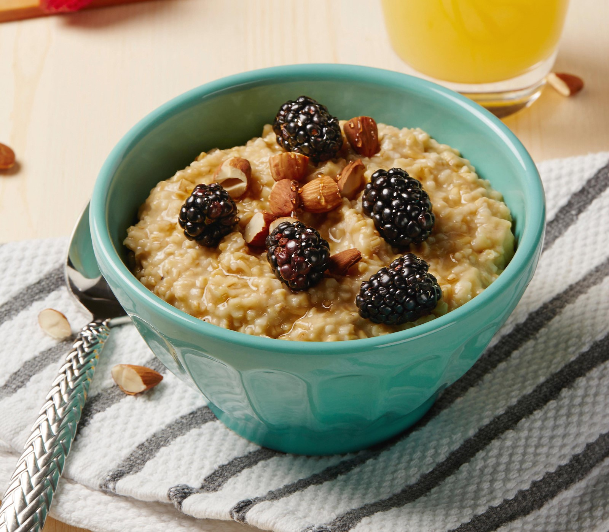 |
Oatmeal with Berries and Apple Juice |
 |
Ginisang Munggo with Rice |
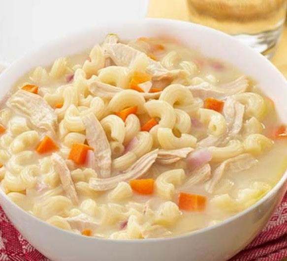 |
Chicken Sopas |
| TUESDAY |
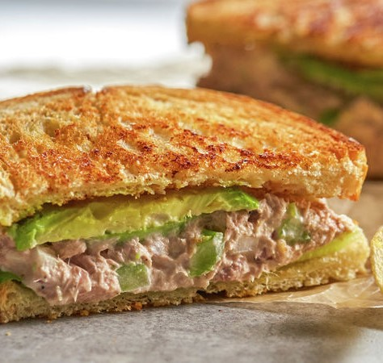 |
Tuna Bread with Lettuce |
 |
Vegetable Lumpia with Rice |
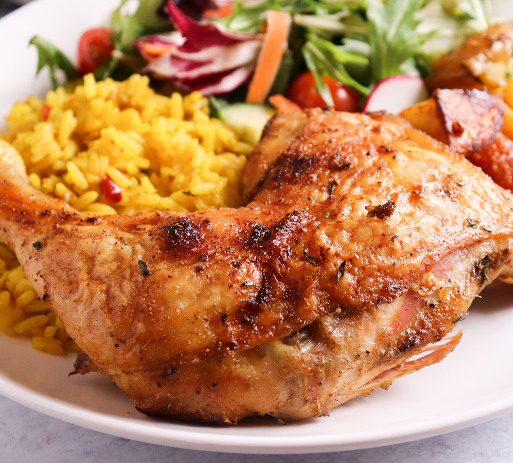 |
Roasted Chicken and Vegetables with Rice |
| WEDNESDAY |
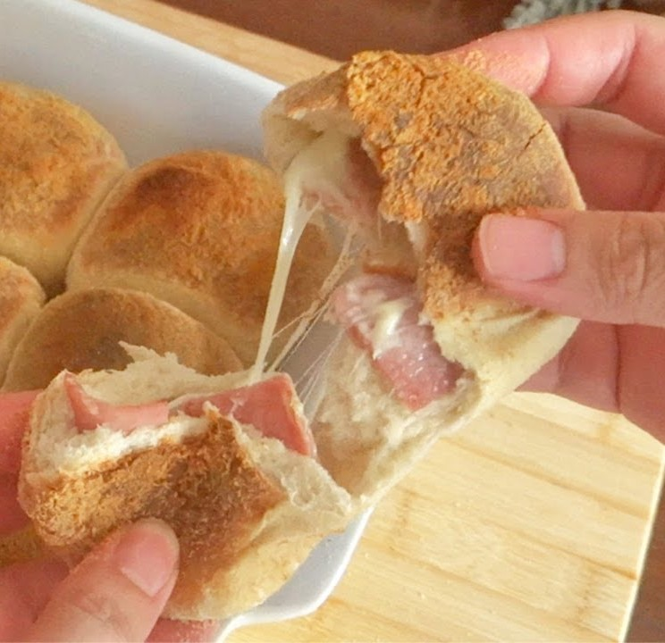 |
Malunggay Pandesal with Ham |
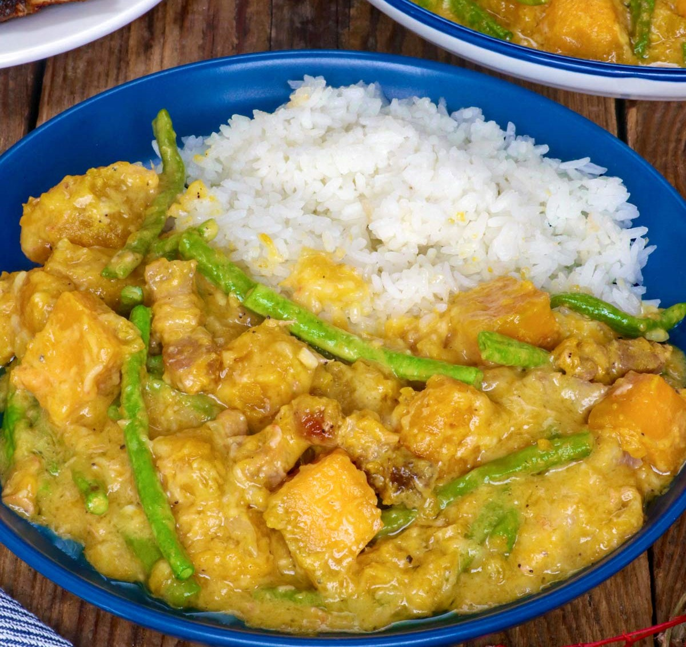 |
Ginataang Kalabasa with Rice |
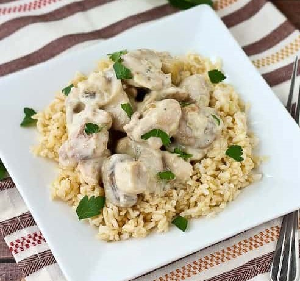 |
Garlic Mushroom Chicken with Rice |
| THURSDAY |
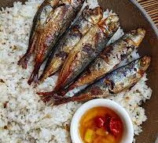 |
Tinapa with Rice and Cucumber Juice |
|
Ginisang Sayote with Rice |
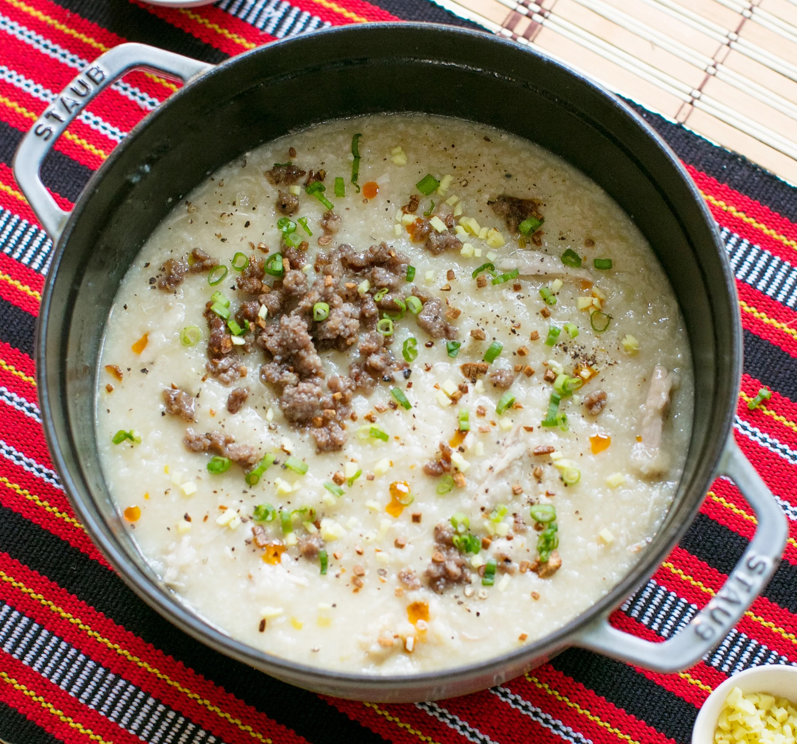 |
Lugaw with Spinach Juice |
| FRIDAY |
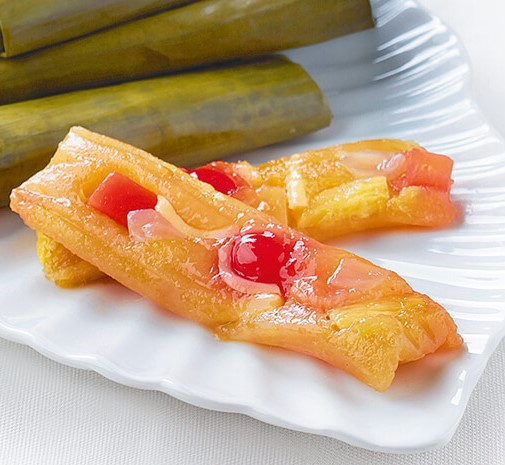 |
Suman with Strawberries and Orange Juice |
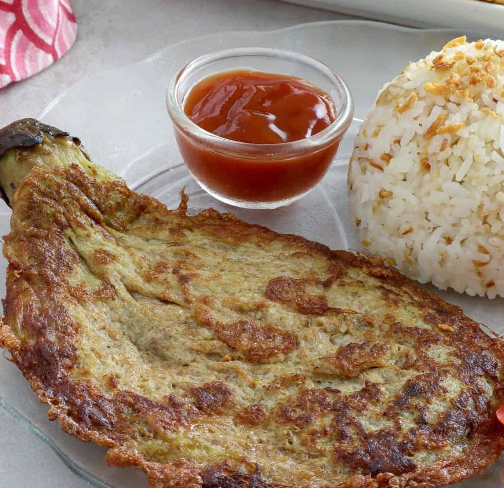 |
Tortang Talong with Rice |
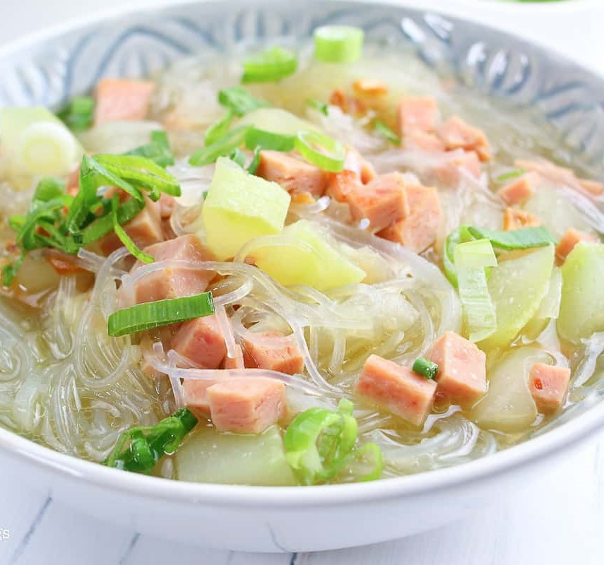 |
Ginisang Upo with Sotanghon |